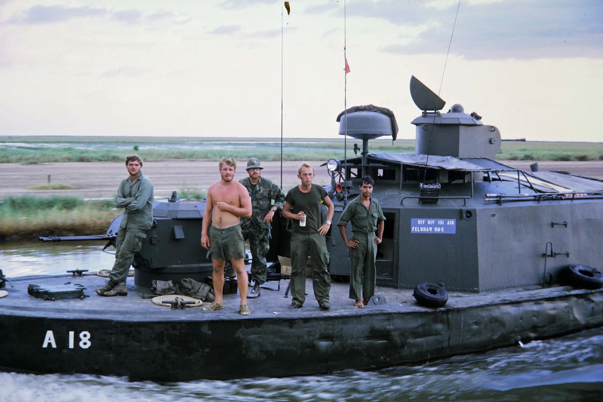

Moments

There are moments in life that stay with you forever. Sometimes their significance goes unnoticed when they are happening, and it is only later when you realize the memory of that moment has wormed its way into your soul and will never let go.
For me, one of those moments came in 1975 in the middle of fifth grade. Another occurred much more recently in March of 2019. Unexpectedly, those two moments would collide.
In 1975, several months after the American war in Vietnam ended, a new student arrived at my elementary school. Her name was Tam. She and her family had come to Mississippi as refugees from Vietnam. Of course, I asked her why and I was embarrassed by her answer. That was the first moment.
Tam and I had been born in the same year, but our childhoods were markedly different. I had grown up oblivious to the conflict that had been the backdrop to her entire life. I was fascinated by my new friend and wanted to know more about the place she used to call home—the place where more than 56,000 Americans had died. My parents, the library, and Tam herself were all great resources and helped me in my quest to learn about Vietnam and the war that brought her to the U.S. It was through my conversations with Tam that I first learned about Agent Orange.
Agent Orange was an herbicide that the U.S. used extensively in Vietnam to destroy the jungle and food crops of the enemy. It was supposed to help our troops. Much later I would come to understand that Agent Orange was also contaminated with dioxin—one of the most toxic compounds humans have ever produced.
Ken Gamble during his Navy days (Ken is on the far left in the two outside photos). Circa 1962.
In 1995, two decades after meeting Tam, I completed my dissertation studies examining mechanisms associated with the development of endometriosis, a gynecologic disease. These studies earned me a PhD in reproductive pathology. Two years before receiving my degree, the first paper linking dioxin exposure to the development of endometriosis was published by another laboratory (1). Although I couldn’t know it at the time, that paper would set the course for the rest of my scientific career. Over the last two decades, my research partner, Kevin Osteen, PhD, and I, along with a myriad of students, fellows, and colleagues have contributed significantly to the current understanding of the long-term and generational effects of dioxin. It was because of these studies that in March of 2019 I first met Ken Gamble. The second moment.
Ken did two tours in Vietnam with the Brown Water Navy. In recent years, he established the Orange Heart Medal Foundation and has worked tirelessly to ensure veterans of America’s most unpopular conflict are recognized for their suffering due to Agent Orange exposure. Ken learned of our research and asked if he could visit the lab.
As it happened that day in 2019 when Ken came to Vanderbilt to learn more about our dioxin research, my 17-year-old son, Kendrick, and his friend were also there. It was senior “shadow day” at their high school. Seniors could have an excused absence from school if they spent the day visiting someone who worked in the field to which they aspired. Kendrick cared nothing about becoming a scientist; he just wanted a day out of school. His friend, however, hoped to become a physician and relished the thought of spending the day at a medical school.
After showing Ken the labs, we returned to my office. Kendrick was there and I introduced him to Ken. They shook hands, and Ken said to Kendrick, “I was your age when I went to Vietnam.”
Really?
Left: A recent photo of Ken Gamble wearing the Agent Orange T-shirt and hat he designed. Right: Kendrick Tran (age 17) in May 2019 immediately before his high school graduation ceremony.
I was born in 1964, and thus every American veteran of the war in Vietnam is at least 10 years my senior. By the time I knew enough about Agent Orange to be appalled by our government’s decision to use it, veterans of the Vietnam war were well into their fourth and fifth decades. In other words, they were long past their teenage years.
I looked at the 70-something-year-old man in front of me and could easily accept that he was a veteran. Vietnam veterans had always been older than me, and I never really thought about the fact that they were young once. As I looked from Ken to my child, the juxtaposition created a stark contrast and made me think. I could not possibly imagine Kendrick as a soldier carrying a rifle in a foreign land. Kill or be killed. At 17 he was already much taller than I will ever be, but he was still my little boy. My child. Ken had been a soldier at his age. I had trouble comprehending it.
That’s when those two very disparate moments collided.
Tam came to the U.S. as a refugee. I was born in this country. Both of us are here today because of men and women like Ken who fought and too often died so that the rest of us can live our lives in freedom.
I love America and understand to my core how lucky I am to be an American. I have always appreciated the men and women who are willing to fight to defend and protect us and our allies and am entirely sincere when I say, “Thank you for your service.”
Our research is dedicated to helping America’s Vietnam veterans, their children, and grandchildren who may suffer due to our use of Agent Orange in Southeast Asia. Nevertheless, it has been easy—too easy—to have a clinical detachment to the work. Although my care and concern for Agent Orange-exposed Veterans and their children is genuine and always has been, I must admit, it was only when I looked into the eyes of a veteran and saw my own child reflected there that the mission truly became personal.
References:
(1) Rier SE, Martin DC, Bowman RE, Dmowski WP, Becker JL. (1993) Endometriosis in rhesus monkeys (Macaca mulatta) following chronic exposure to 2,3,7,8-tetrachlorodibenzo-p-dioxin. Fundam Appl Toxicol. Nov;21(4):433-41. doi: 10.1006/faat.1993.1119. PMID: 8253297
Quick Links
| Pages | Other Pages | |
|---|---|---|
| Home | The Agent Orange Trilogy | |
| The RAM Blogs | Edge of Justice | |
| Books | Help | |
| Media | ||
| About Me | ||